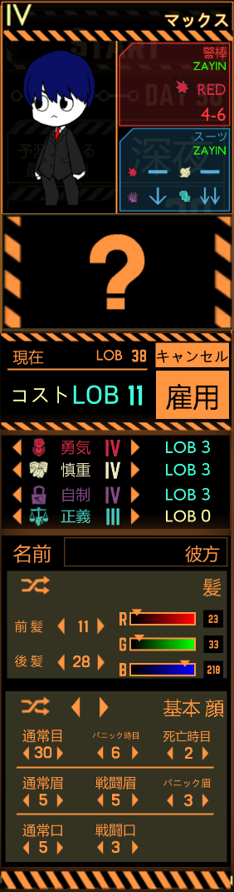

基本情報
| 年齢 | ??歳 |
|---|---|
| 身長 | 173cm |
| 体重 | ??kg |
| 誕生日 | 8月6日 |
| 性別 | 男性 |
| 種族 | 神人 |
| 出身 | 元現世 |
| 職業 | 冒険者 |
| 能力 | 世界を渡り楽しむ程度の能力 |
性格・特徴
様々な世界を渡り楽しむ冒険者。
困ってる人は助けずにはいられない性格であり、冒険先で多くの人々を助けている。
それと同時に、犠牲を伴う決断や周りを巻き込むような行動は絶対に避けるように行動している。
人物への好き嫌いがかなりはっきりしていて、好んでいる相手には関わりを持つが、嫌いなやつにはきっぱりと言い切ったり敵対する。
彼は様々な武器を用いて自由自在に戦うかなり異質な戦い方をする。
彼の主に使う武器は以下の通りだ。
ファンタジア：刀の形をしていながら魔法の刃を持つ。魔法の刃には様々な特性を持たせられ、ファボトスでは痛みのみを与え肉体の損傷がないようにしていた。また、魔法の刃は世界を渡るごとに特性が増えていく。
ラグナロク：二刀流で使える短剣であり、神殺しの異名を持つ。黒き刃を持ち、今まで殺してきた神の力を吸って成長している。とにかく速い速度を誇り、奇襲や反撃、真正面からの戦闘何でもに使える。
デーモン：金色の頭を持つハンマーであり、とにかく一撃が重い。その鈍重さで相手の防御を崩すこともできるが、その攻撃によって周囲を回復することもできるため、要所要所で光る強みがある。
クリュエル：ツヴァイヘンダー型の剣であり、特殊な金属クリュエルによって緑色の刃を持つ。相手の予期しないタイミングでの攻撃が可能であり、相手の隙をつくために使用する。
また、彼方はかなり特殊な力を持つ。
魔眼
・緑の魔眼：彼方の普段の目。複数の魔の力を使う能力を持つ。
・赤と青の魔眼：魔の力をフルパワーで使用できる力を持つ赤の魔眼。ちょっと先の未来を見ることができる青の魔眼。
・紫と灰の魔眼：魔の力を意図的に暴走させることで彼方の力の抑止を無効化する紫の魔眼。絶望の未来を避けるために複数の世界線・複数の未来を見透かす灰の魔眼。
・虹の魔眼：すべての力を引き出し、彼方の本来の能力「神トシテ創造セシ力」を発現させる。
背景・設定
# 第一世
元は現実世界に住んでいた一般的な少年だったが、14歳の頃に中学校からの帰宅中、幻想入りする。
幻想郷では、生きていくための力をつけるため、冥界に赴き、妖夢に弟子入して剣術を学ぶ。
その後に幻想郷に慣れた彼は、紅魔館に遊びに行った際に、フランドール・スカーレットと出会う。
戦いの中で、彼と彼女は仲良い友達のようになっていき、その後に「果を操る程度の能力」を発現。やがて紅魔館で働くようにもなった。
そこからしばらくは異変解決の手伝いをしたりなど平和に過ごしていたが、ある時、大異変が発生する。
幻想郷に巣食う穢れを浄化し、幻想郷を月人のものにするため、月人が幻想郷に攻めてきた。
幻想郷は善戦したが、月人の圧倒的な技術力の前になすすべなくやられていった。
そんな時、別世界から「アシア」という人物が現れ、生き残り・彼方・アシアは月人に対抗をするため、彼方と彼方の能力を代償に「生命の泉」を建設。
生命の泉により力尽きた者たちが無限に復活することでなんとか月人を追い出し、幻想郷は平和を取り戻した。しかし、彼方は「生命の泉」の建設を代償に、幻想郷から消え、元の現実世界に戻ってきた。
# 第二世
そこから現実世界では数十年が立ち、彼方は驚異的な技術と知識を得て、現実世界にテレポート装置を作成。そして友達である「ヒカリ」・「ソフィア」・「柘」と共に、幻想郷に戻る。
幻想郷では、第二次紅魔異変が発生しており、彼方たちは能力を取り戻しながら、異変解決を行う。
(第二次紅魔異変：https://canataprogrammer.github.io/HoF/)
第二次紅魔異変後、彼方は再び幻想郷で平和に暮らしつつ、異変解決なんかも行っていた。
そんな中、現実世界からクローンの技術を幻想郷に持ってきたことで、彼方はクローンを作り、ほぼ無限に蘇生できるようになった。
やがて、「アシア」が居たとされた世界から「姫」が助けを求めてきた。彼方たちは姫の世界に赴き、姫の世界を救うために奔走する。
しかし、そんな中でフランが捉えられてしまう。彼方はフランが捉えられた影響で、自我を失ったように狂いやがて蘇生回数が百万回を超えてしまうまでになってしまう。
そんな絶望の感情と、姫の世界の力が彼方の目を活性化させ、彼方は魔眼を発現させる。
魔眼を発現させた彼方は、無事にフランの救出に成功。また、魔眼の力によって姫の世界を救うことに成功する。
しかし、そんな中で、現実世界に月人が攻めてくる。
世界の９割が壊滅した中、彼方は月人を追い出し幻想郷や姫の世界にも危害が発生しないよう、彼方の「果を操る程度の能力」を使用し、世界全体をリセットさせる。
# 第三世
リセット後に、木々が生い茂る「LostCity」で記憶と能力を失った彼方は、手がかりを探りながら記憶・能力を取り戻し、幻想郷に戻る。
幻想郷に戻った彼方は、これ以上の被害を出さないため、月人への全面侵略を決意する。
彼方は、幻想郷の重要人物たちからの協力を得て、月へと向かう。月人たちを殺し、やがて首都の先にいる月人の女王「レヴィス」と対峙する。
神そのものを作り出す力を持つレヴィスはかなり強力だったが、彼方は戦いの中でレヴィスの弱点を見つけ、やがてレヴィスを殺すことに成功する。
レヴィスを殺し、レヴィスの能力を吸収した彼方だったが、彼方の持つ「果を操る程度の能力」と共鳴し、彼方は「世界をプログラムする程度の能力」を得ることとなる。
# 第四世
月人の脅威がなくなった彼方は、更にいろいろな世界を巡るため「ポータルルーム」を幻想郷に作り、新たな世界を巡る旅に出た。
最初に踏み入れた世界である学園都市「キヴォトス」で、彼方は先生として学園都市の生徒たちと共に様々な事件を解決していく。
やがて、事件の最中でレヴィスの思念体がベアトリーチェとして立ちはだかるも、更に強くなっていた彼方の相手ではなかった。
存在したかもしれない世界線である「プレナパテス」と、戦った彼方は、「プレナパテス」を打ち砕き彼から「王の力」を得て、更に力をつけていった。
そしてこのまま平和に暮らすかと思っていたが、そんな平和は束の間だった。
彼方は突如現れたアンドロイド軍団や幽霊のような存在が現れ、学園都市を守るため戦い続けたがそんな彼方にも限界が来た。
キヴォトスのこのまま守り抜くのは不可能だと悟った彼方は「空崎ヒナ」をポータルルームに送り、その後に無名の司祭たちに囚われ、実験体となった。
やがて、キヴォトスはヒナと幻想郷の住人によって救われたが、そんな時、彼方は色彩と接触していた。
色彩との戦いにより、かなりの苦戦の末彼方は勝ち、色彩の力を受けることができた。
# 第五世
そんなあとの「キヴォトス」は、幻想郷・色彩・神秘、様々なものが混じり合い、幻想的学園都市「ファボトス」へと変化した。
そんな変化した頃、別世界である「異海カナタ」の世界・「外音零」の世界も「ファボトス」と混じり合い、この学園都市には先生が3人存在することとなった。
彼方は、先生としての役職を他の二人へと託し、やがて他の異世界を巡る旅に出ることとなった。
様々な世界を巡る中で、彼方は再び現実世界に戻ることとなった。そんな現実世界は「実力主義の世界」となっていた。
この実力主義の世界で彼方は能力を制限して不良たちにもボコボコにされていたが、そんな中で「雨水 咲」と出会い、友だちになった。
やがて、能力を少し解放した影響で「雨水 咲」と共にこの世界の最上位の学校に入学することとなった。
入学先で「心風 凪」と出会い、その後にいろいろなイベントを経て彼方・咲・凪は最上位のクラスに割り当てられた。
そんな三人は最上位のクラスの仲間と共に実力主義の世界の王の護衛というミッションを受けることとなった。
順調だった護衛ミッションの中、「心風 凪」は実はスパイであり王の暗殺へと成功しそうだったが、間一髪のところで彼方が助ける。
彼方に暗殺を失敗した凪は、仲間である「死神」の構成員たちに命を狙われたが、彼方が全てを片付けることでこの件は一件落着となった。
そこから1年が経った頃、三人はこの実力主義の世界を変えることに成功し、咲と凪はその世界に残り彼方は再び世界を渡ることとなった。
世界を渡っている最中、この世界全体を統括していた中継地点である「C8x6N」が危険な状態へとなり、彼方は過去に戦ってきた仲間たちとともに、「C8x6N」を救うことに成功する。
しかし、その戦いで彼方は致命傷を受け生死をさまようこととなる。
彼方に強い思いを抱いていた「心風 凪」は彼方を助けるために奮闘するが、途中で「宵闇を操りしもの」の能力が暴走、凪も危機的な状態へと陥る。
凪から咲へとバトンタッチされた彼方の救出は見事に成功し、彼方は息を吹き返すことに成功する。
そして彼方は、凪を「能力を持つが力の暴走を止めれない凪」と「能力を失うが力の暴走が発生せず自由に生きる凪」の二人に分裂させ、彼方は「能力を持つが力の暴走を止めれない凪」の力を常時吸収するため、そんな凪と一緒に色々な世界を渡るようになった。
デザインメモ
青色の髪と緑色の目(魔眼)を持つ青年である。
紫のパーカーと紺のTシャツ、グレーのパンツ、スニーカーを履いており、頭には光輪が浮かんでいる。
左腕は魔法を効率的に使用するために金属による義手になっている(上から隠すように肌の色と同じ色の皮が貼られている)。
R18は禁止(本人にそういう趣味がないため)。
R18Gは自由(世界観的に山のようにあるため)。
イラスト

ロボトミ世界での彼方